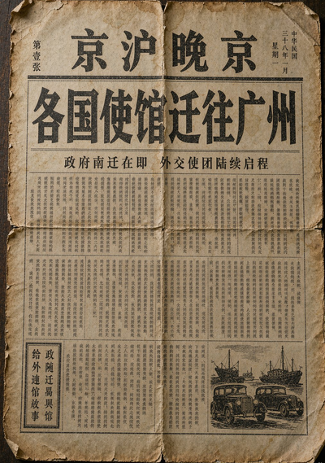

戌
戌
戌时 · 黄昏
暮色四合，未寄出的信还压在案头。拨一拨日晷，听听那年入夜的风。
第三幕 · 夜
信的最后一页，页脚写了一行没头没尾的话。
南京 · 颐和路
冬月初三
1 / 27
1 / 27
‹
›
页脚那句话，每个字取拼音首字母，会拼出什么？
“廿二日他走”——想成一个日期：1949年1月22日。去掉点号，就是密码。
写下你的答案
寄

民国三十八年 · 一月
那天，是几号？
背包 · 外婆的旧物